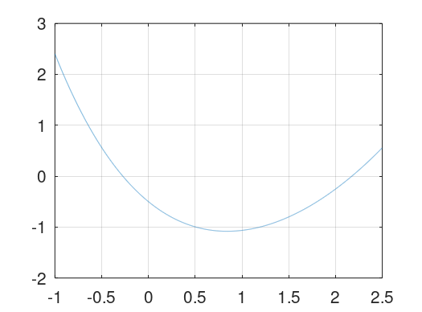

Raices de funciones
Ignacio Sica
03/06/21
Considere a la funcion dada y encuentre las raices de la funcion usando los metodos de Biseccion, Newton y Secante. Compare el desempeno de los metodos. Corrobore los ordenes de convergencia de los diferentes algoritmos.
disp("Problema 1:") t = linspace(-1, 2.5, 5000); plot(t, arrayfun(@(t) fun(t), t)); grid on; x = 100; pValue = 90; xL = 0; xU = 100; maxI = 100; minE = 10e-8; disp("bisection") tic(); [state, val, iCounter] = bisection(xL, xU, maxI, minE) time = toc (); printf("Time elapsed: %ds", time), disp("") disp("newton") tic(); [state, val, iCounter] = newton(x, maxI, minE) time = toc (); printf("Time elapsed: %ds", time), disp("") disp("secant") tic(); [state, val, iCounter] = secant(x, pValue, maxI, minE) time = toc (); printf("Time elapsed: %ds", time), disp("")
Problema 1: bisection state = success val = 2.1746 iCounter = 30 Time elapsed: 0.00287294s newton state = success val = 2.1746 iCounter = 54 Time elapsed: 0.00845003s secant state = success val = 2.1746 iCounter = 72 Time elapsed: 0.00539112s
Con los resultados de las aproximaciones del problema 1 se puede observar que el metodo que en este caso converge mas rapido es el de bisection y tiene sentido ya que es el unico que asegura una cantidad de pasos determinada dadas las condiciones iniciales. Tambien es el que demora menos tiempo en ejecutarse por el mismo motivo. De los otros dos metodos se puede el de newton precisa de menos iteraciones para llegar al resultado deseado necesitando solamente de 54 iteraciones con respecto a las 72 necesarias en el metodo del secante.
Utilizando el metodo de Newton aproxime la raiz de la funcion dada. partiendo de la condicion inicial (x1,x2)=(−1.5,1.5). La condicion de exito es la misma que en el problema 1.
disp("Problema 2:") maxI = 100; minE = 10e-8; x1 = -1.5; x2 = 1.5; xv = [x1;x2]; disp("newton") tic(); [state, x, iCounter] = mnewton(xv, maxI, minE) time = toc (); printf("Time elapsed: %ds", time), disp("")
Problema 2: newton state = success x = -1.3692 0.5779 iCounter = 5 Time elapsed: 0.116327s
En este ejercicio se busco una raiz en una funcion de multiples dimensiones a traves del metodo de newton. Dicho metodo resulto muy eficiente a que a pesar no tratarse de una funcion sencilla de una sola variable, la cantidad de iteraciones fue muy baja y tambien se preciso de muy poco tiempo para realizar la tarea.
Eric Walter, Springer, Numerical Methods and Optimization
Richard Khoury & Douglas Wilhelm Harder, Springer Numerical Methods and Modelling for Engineering
Gauss�Seidel method, Wikipedia, (https://en.wikipedia.org/wiki/Gauss%E2%80%93Seidel_method)
Norm (mathematics), Wikipedia (https://en.wikipedia.org/wiki/Norm_(mathematics))
Javier Segura, Universidad de Cantabria, Introduccion al analisis numerico (https://personales.unican.es/segurajj/intro.pdf)
Errors for Linear Systems (http://terpconnect.umd.edu/~petersd/460/linsysterrn.pdf)
Inv Function (https://octave.sourceforge.io/octave/function/inv.html)
https://www.unioviedo.es/compnum/labs/PYTHON/Interpolation.html https://www.youtube.com/watch?v=Az2jhvu2i2I http://www.ugr.es/~mpasadas/ftp/Inter2.pdf
function [state, val, iCounter] = bisection(xL, xU, maxI, minE) x = xL; iCounter = 0; while(1==1) pValue = x; x = (xL + xU) / 2; evaluation = fun(x); if(evaluation * fun(xU) > 0) xU = x; elseif(evaluation * fun(xL) > 0) xL = x; endif %cError = abs((x-pValue) / x); cError = abs(max((x-pValue), (fun(x) - fun(pValue)))); iCounter = iCounter + 1; if(cError <= minE) val = x; state = "success"; return; endif if(iCounter >= maxI) val = x; state = "failure"; return; endif endwhile endfunction
function [state, val, iCounter] = newton (x, maxI, minE) iCounter = 0; while(1==1) pValue = x; x = x - (fun(x) / dfun(x)); if(dfun(x) == 0) val = x; state = "failure"; return; endif %cError = abs((x-pValue) / x); cError = abs(max((x-pValue), (fun(x) - fun(pValue)))); iCounter = iCounter + 1; if(cError <= minE) val = x; state = "success"; return; endif if(iCounter >= maxI) val = x; state = "failure"; return; endif endwhile endfunction
function [state, val, iCounter] = secant (x, pValue, maxI, minE) iCounter = 0; while(1==1) tValue = x; x = x - (fun(x) * (pValue - x)) / (fun(pValue) - fun(x)); pValue = tValue; %cError = abs((x-pValue) / x); cError = abs(max((x-pValue), (fun(x) - fun(pValue)))); iCounter = iCounter + 1; if(cError <= minE) val = x; state = "success"; return; endif if(iCounter >= maxI) val = x; state = "failure"; return; endif endwhile endfunction
function [state, x, iCounter] = mnewton (x, maxI, minE) iCounter = 0; while(1==1) pValue = x; delta = sem_plu(evalJ(x), -fun2(x)); x = x + delta; cError = max(norm((x-pValue)), norm((fun2(x) - fun2(pValue)))); iCounter = iCounter + 1; if(cError <= minE) state = "success"; return; endif if(iCounter >= maxI) state = "failure"; return; endif endwhile endfunction
function [J] = evalJ(x) J = zeros(size(x)(1)); J(1,1) = 2*x(1) - x(2); J(1,2) = - x(1) + 2*x(2); J(2,1) = 1 - x(2); J(2,2) = 1 - x(1); endfunction
function f = fun(t) f = (e^t - 2*t) * e^(-t/2) - 1.5; endfunction
function [y] = fun2(x) y = zeros(size(x)(1), 1); y(1) = x(1)^2 - x(1)*x(2) + x(2)^2 - 3; y(2) = x(1) + x(2) - x(1)*x(2); endfunction
function [x] = sem_plu(A, b) [P, L, U] = plu(A); [y] = SustitucionAdelante (L, P*b); [x, msg] = SustitucionAtras (U, y); endfunction